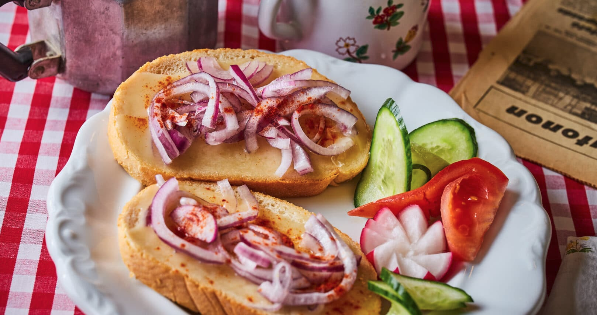

Greasy bread

Description
Yes, I added it for fun, but it's a real thing. And surprisingly good.
It's much healthier with a lot of vegetables, but if you want to eat healthy, why are you browsing Hungarian recipes?
Ingredients
- Bread
- Animal fat (often pork, but goose or duck is better)
- That's all there is, but if you want, you can make it better with some:
- Red onion (some eat yellow, but trust me, red is better here)
- Salt
- Black pepper
- Powdered paprika
Steps
- Put the animal fat on the bread. (Not too much!)
- Add thinly sliced red onion and the seasonings to taste.
- If you want a real Hungarian experience, have some alcohol on the side.
- Cheers!
Back to the main page